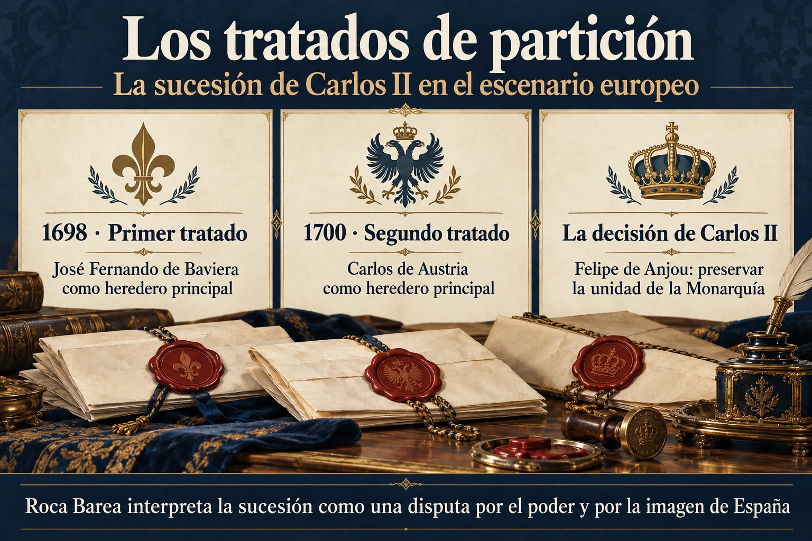

Volumen 1 · Capítulo 1 · Entrega 01
La sucesión española en el escenario europeo
Estudio expositivo de Fracasología de María Elvira Roca Barea
La primera parte comienza con la sucesión de Carlos II porque Roca Barea considera que el relevo dinástico proporciona las condiciones políticas para una transformación cultural duradera. Antes de examinar cómo cambió la interpretación de España, reconstruye el interés de las potencias por el futuro de la Monarquía Hispánica. El punto de partida es la ausencia de un heredero directo y la perspectiva de que unos territorios repartidos por Europa y América puedan quedar sometidos a una nueva distribución de poder. Para la autora, lo que estaba en juego excedía ampliamente la elección de un rey.
Los tratados de partición ilustran esa dimensión. Francia, Inglaterra y las Provincias Unidas negocian sobre posesiones de la monarquía sin que el consentimiento español determine sus acuerdos. Roca Barea insiste en la diferencia entre dos objetivos: las potencias buscan un reparto compatible con sus intereses; Carlos II y su gobierno procuran preservar la integridad de los territorios. Una candidatura sucesoria podía resultar aceptable para Madrid y, al mismo tiempo, quedar asociada en las negociaciones internacionales a unas amputaciones que el rey rechazaba. Por eso el reconocimiento de un heredero y la aceptación de un tratado de reparto deben distinguirse en el relato.


Ampliar imagenLeer el esquema y sus referencias
- 1698 · Primer tratado. José Fernando de Baviera como heredero principal
- 1700 · Segundo tratado. Carlos de Austria como heredero principal
- La decisión de Carlos II. Felipe de Anjou: preservar la unidad de la Monarquía
Fuente de lectura: Roca Barea, Fracasología (2019), apartado desarrollado en la entrega 01. Esquema expositivo de la interpretación de la autora; no cita literal.
Se distinguen los proyectos de reparto de 1698 y 1700 de las cesiones acordadas al final de la Guerra de Sucesión. La lámina no reproduce el reparto territorial erróneo del PNG recibido.
Contraste documental: Tratados de 1698 y 1700: estudio en Revista de Estudios Extremeños
La candidatura de José Fernando de Baviera aparece como una solución de compromiso capaz de evitar la unión de los dominios españoles y austriacos. Su muerte reabre el conflicto y obliga a buscar otra salida. En la reconstrucción del libro, los proyectos en torno a Carlos de Habsburgo y Felipe de Anjou se desarrollan entre presiones diplomáticas e intervenciones sobre la corte madrileña. La autora concentra su atención en cómo la opción francesa consigue presentarse como la garantía más eficaz de la unidad de la monarquía. La preservación de los territorios se convierte así en el argumento que permite promover a un nieto de Luis XIV.
Ese argumento constituye la paradoja que organiza la exposición: Francia, que había combatido repetidamente a la monarquía española, pasa a ofrecerse como su protectora. Para hacer visible el cambio de percepción, Roca Barea recorre cuatro conflictos del reinado de Carlos II: la Guerra de Devolución, la de Holanda, la de las Reuniones y la de los Nueve Años. Su función en el capítulo es recordar la continuidad de la presión militar francesa y mostrar que la nueva confianza en Luis XIV no surgía de una larga relación de cooperación. La autora interpreta esa confianza como un éxito de la acción política y propagandística francesa.
El recorrido militar introduce también una cuestión de perspectiva. En la lectura de Roca Barea, la imagen del esplendor francés tiende a ocultar el coste de sus campañas y los límites de sus ganancias. La exhibición de poder y lujo contribuye a fijar una impresión de superioridad que puede sobrevivir a resultados menos favorables. Esa capacidad de administrar la propia imagen será importante en todo el ensayo: permite explicar por qué ciertos fracasos franceses no llegan a convertirse en condenas de la historia de Francia, mientras las dificultades españolas alimentan una interpretación general de decadencia.
La elección de Felipe de Anjou aparece, por tanto, como el resultado de una disputa sobre el porvenir de la monarquía y sobre la interpretación de su presente. Si España se considera incapaz de sostenerse por sí misma, la tutela francesa puede parecer indispensable. El capítulo comienza a enlazar así la cuestión sucesoria con el tema principal de Fracasología: una representación de debilidad puede orientar decisiones políticas decisivas. En las páginas siguientes, esa relación se concreta en la actuación del embajador Harcourt y en los cambios de gobierno que hicieron posible el triunfo del partido francés en Madrid.
Referencia de la entrega y criterio de lectura
Capítulo 1, «Los tratados de partición» y «Cuatro guerras». libro, OEBPS/Text/capit01.xhtml, epígrafes sigil_toc_id_1 y sigil_toc_id_2.
El texto reconstruye el argumento de Roca Barea. Las alusiones a otras obras proceden del ensayo y no implican la consulta independiente de todas ellas. Criterio editorial de la colección.
Referencia de la entrega. Capítulo 1, «Los tratados de partición» y «Cuatro guerras». libro, OEBPS/Text/capit01.xhtml, epígrafes sigil_toc_id_1 y sigil_toc_id_2.